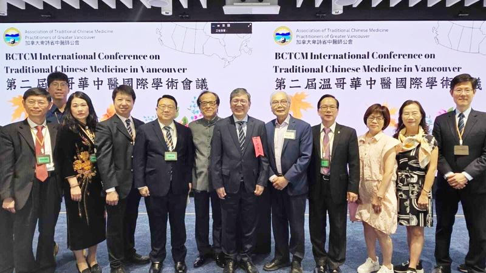
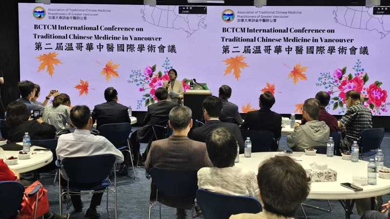

中华民国中医师公会全国联合会访问团首度到温哥华参加国际会议，分享台湾中医现代化的成就，包括中医纳入健保、中西集成医疗等经验，受与会的加拿大和英国专家赞扬，期盼中医在当地能成为主流医疗。
由加拿大卑诗省中医师公会举办的「第二届中医国际学术会议」3、4日两天在温哥华举行，来自台湾、中国、香港、英国和加拿大共5个国家数十名中医生齐聚一堂。中华民国中医师公会全国联合会理事长詹永兆发表主题演讲论述「台湾中医现况」。 !function(v,t,o){var a=t.createElement("script");a.src="https://ad.vidverto.io/vidverto/js/aries/v1/invocation.js",a.setAttribute("fetchpriority","high");var r=v.top;r.document.head.appendChild(a),v.self!==v.top&&(v.frameElement.style.cssText="width:0px!important;height:0px!important;"),r.aries=r.aries||{},r.aries.v1=r.aries.v1||{commands:};var c=r.aries.v1;c.commands.push((function(){var d=document.getElementById("_vidverto-bc0de73c10937be205a8d57fd75a9690");d.setAttribute("id",(d.getAttribute("id")+(new Date()).getTime()));var t=v.frameElement||d;c.mount("10171",t,{width:720,height:405})}))}(window,document);
詹永兆说明台湾中医纳入健保将近30年时间，过程中仍不断强化中医教育和管理制度，中西医合疗也日益成熟，时至今日，许多民众已认可中医不只有保健功效，也能治疗急症和重症。
他举例：「中医介入洗肾病患或是癌症病患的治疗，都有临床数据证实疗效良好，不仅减轻病人痛苦、增加康复几率，也明显降低医疗成本。」他又说「尤其清冠一号的成效卓着，民众对中医好感度大增。过去2年期间，台湾添加140万人寻求中医诊治，共增1000万人次使用中医。」
詹永兆并提到许多台湾年轻人渴望成为中医师，例如今年阳明交大中医系首次招生，全台优秀学子争抢30个录取名额。「第一阶段入学申请结果3月公布时，有626名考生报名争取10个名额，录取率仅1.6%，显见中医是非常热门的学系。」
参与国际中医学术会议的卑诗省公民服务厅长周炯华（George Chow）很高兴听闻阳明交大是台湾第一个国立大学设立中医系，因为卑诗省政府上星期刚宣布将在公立的昆特兰理工大学（Kwantlen...

中华民国中医师公会全国联合会理事长詹永兆（右6）率领其他6位中医师首度到加拿大温哥华参与国际中医学术会议。卑诗省官员和驻温哥华办事处副处长等人均到场祝贺。（中央社）
中华民国中医师公会全国联合会访问团首度到温哥华参加国际会议，分享台湾中医现代化的成就，包括中医纳入健保、中西集成医疗等经验，受与会的加拿大和英国专家赞扬，期盼中医在当地能成为主流医疗。
由加拿大卑诗省中医师公会举办的「第二届中医国际学术会议」3、4日两天在温哥华举行，来自台湾、中国、香港、英国和加拿大共5个国家数十名中医生齐聚一堂。中华民国中医师公会全国联合会理事长詹永兆发表主题演讲论述「台湾中医现况」。
詹永兆说明台湾中医纳入健保将近30年时间，过程中仍不断强化中医教育和管理制度，中西医合疗也日益成熟，时至今日，许多民众已认可中医不只有保健功效，也能治疗急症和重症。
他举例：「中医介入洗肾病患或是癌症病患的治疗，都有临床数据证实疗效良好，不仅减轻病人痛苦、增加康复几率，也明显降低医疗成本。」他又说「尤其清冠一号的成效卓着，民众对中医好感度大增。过去2年期间，台湾添加140万人寻求中医诊治，共增1000万人次使用中医。」
詹永兆并提到许多台湾年轻人渴望成为中医师，例如今年阳明交大中医系首次招生，全台优秀学子争抢30个录取名额。「第一阶段入学申请结果3月公布时，有626名考生报名争取10个名额，录取率仅1.6%，显见中医是非常热门的学系。」
参与国际中医学术会议的卑诗省公民服务厅长周炯华（George Chow）很高兴听闻阳明交大是台湾第一个国立大学设立中医系，因为卑诗省政府上星期刚宣布将在公立的昆特兰理工大学（Kwantlen Polytechnic University）开设加拿大首个中医学士学位课程。他说：「两个学校可以多交流，学生们可更有国际观。」
卑诗省中医师公会张汉英称，举办中医国际学术会议正是希望能让中医专家们分享不同国家的政策，就医学教育、临床研究以及医疗服务等领域交流经验。
她说，虽然卑诗省很重视中医发展，是加拿大唯一对中医师授予「医生」（doctor）头衔的省份，但对民众来说，最渴望的是能看到中医纳入健保。「台湾做得很成功，我们正将台湾的数据做为参考数据，搭配加拿大的研究数据，希望获得政府认可。只有纳入健保，才能惠及全民。」
3日会议第一天，除了詹永兆的主题演讲外，林口长庚纪念医院中医部部主任黄泽宏和台北市中医师公会名誉理事长陈潮宗也分别就「针刺结合徒手操作治疗肌筋膜疼痛症候群」、「从经验医学至精准医学之十大名方临床应用」两大主题分享经验。
接下来中医师廖婉婷、陈俊如、陈豪君、胡文龙也将分别针对免疫疾病、美容医学、Ａ型流感和干眼症等领域探究中医的疗效。

来自台湾、中国、香港、英国和加拿大共5国数十名中医师齐聚一堂，就各国中医发展、医学教育、临床研究等领域分享交流，期盼中医能从「另类医疗」跃升成「主流医疗」。（中央社）